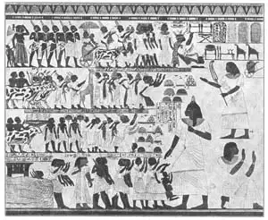
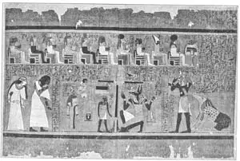

02
WHAT’S WRONG WITH THIS PICTURE
这画有毛病吗

THE cave men made pictures on the walls and ceilings of their caves. The old Egyptians didn’t live in caves. They lived in houses, where they didn’t draw pictures on the walls or ceilings. Their houses were usually mud huts, not much better than the caves that the cave men lived in, but the Egyptians were not interested in the houses they lived in. They were interested only in the houses they were dead in (tombs, we call them) or in the houses they made for their gods (temples, we call them).
Most dead people are buried in the ground nowadays, but the Egyptians thought the ground was no place for the dead. Besides, much of the ground of Egypt was under water for almost half of each year, for the River Nile flooded the country regularly every summer, and that would have been bad for graves.
The Egyptians believed their bodies would come to life again after thousands of years, and so kings and rich people, who could afford it, built tombs to be buried in. And they built them to last—never out of wood or anything like that, but of solid stone or brick. They wanted to put their bodies in a safe place, something like a safe-deposit vault. When they died, their bodies were preserved in a way we call embalming, so as not to decay.
These embalmed bodies were called mummies and the mummies were put in coffins that were shaped something like the bodies. On the coffins, or mummy cases, and on the plaster walls of their tombs and temples, the Egyptians drew and painted pictures—thousands of them, to cover every bit of space. And these pictures were made while the people were still alive.
These pictures that the Egyptians made on the mummy cases and on the walls of tombs and temples were not pictures of wild animals such as the cave men made. Some were of animals, though not the kind of animals the cave men drew. Most of the pictures were of people— men and women, kings and queens, gods and goddesses.
There is a way of finding out how old boys and girls are, without asking their age. We show them drawings of three faces from each of which something has been left out. The first face has no eyes, the second face has no mouth, the third face has no nose. Then we ask who can tell what is left out. Now, you might think any one could tell what was wrong with these pictures, but until boys and girls are about six years old , they can’t see that anything at all is left out, so if they can’t see what is wrong, we know they are not six years old.

No.2-1 EGYPTIANS BRINGING PRESENTS TO THE KING（埃及人向国王献礼）
Courtesy of The University Prints
Here is an Egyptian picture that has something wrong with it. It’s the picture of a seated man making a lance—a lance maker. I wonder if you are old enough to see what’s wrong with this picture.
See if you can find out what’s wrong, before I tell you. If you can’t see what’s wrong, you may be even sixty years old, for some quite old people can’t see what it is. It’s a sort of puzzle. See if you’ve guessed right.
It’s this : the eye is the shape an eye has when we see it from the front, but the face is a side face. So it is a front eye in a side face.
Another peculiar thing about this picture is that the body is twisted. The shoulders are full front, but the hips, legs, and foot are sideways.
In old Egyptian times all the artists drew certain things in a certain way. The artists were taught to draw that way, and they had to draw that way such things as I have mentioned—the front eye in the side face, the front shoulders with a side view of legs and feet.
Have you ever noticed the pictures on magazine covers? Some are just pictures of pretty women or pretty flowers. But some of the pictures tell a story or part of a story. Some of these story-telling pictures have words underneath to tell what the picture means, but some don’t need any words underneath. The picture tells the story without any words. We call such pictures that tell a story illustrations.
Egyptian pictures are chiefly illustrations. They tell a story either with or without words—a story of the life of some dead king or queen, their battles, their hunting parties, their parades. And above, below, or at the side, there are often words, in Egyptian writing, that describe the pictures. These words look very much like pictures, themselves, for the Egyptian writing is a kind of picture writing. It is called hieroglyphics.
When Egyptian artists drew a king with common people around him, they made the king very large and the other people very small. The king was made to be a giant—two or three times as large as the common people—just to show he was really a great man.
When the Egyptian artists drew pictures of crowds, they didn’t know how to show men farther back in the picture, as we should do, by drawing them smaller and raising them a little bit. They made those farther back the same size as those in front, and to show that they were farther back they put those in the back above those in front.

No.2-3 AN EGYPTIAN PICTURE WITH HIEROGLYPHICS（埃及森严的阶层制度）
Courtesy of The University Prints
We have hundreds of colors and shades nowadays, but the Egyptians had only four bright colors—red, yellow, green, blue. Besides these they had black, white, and brown. And their colors lasted. You know how hard it is to find any color nowadays that doesn’t fade. Window curtains, couch covers, even the colors of dresses, fade unless they are sunfast. But these pictures the Egyptians made are almost as fresh and bright as when first done, thousands of years ago. That’s because the colors used were “fast,” and also because the pictures were hidden away in the dark where the sun could not fade them. They were drawn and painted on the plaster walls and the colors were very bright—not like nature. It didn’t matter whether something really had any color, or what the particular color should be. They painted it the way they thought looked well. They might paint a man’s face bright red or even green!
When you think of all these old pictures that were not meant to be seen by the eye of any man, you may wonder: Why did the Egyptians make them? What was the idea? And yet to-day when we build a great building such as a church, a house of God, a Christian temple, we put into a hollow stone in the foundation—a corner-stone, we call it—the daily paper, photographs of people alive at the time, and so on. Why? The building is expected to last for ages and the corner-stone will never be opened until the building comes down. Why? Our idea may be something like the old Egyptians’ idea, after all!
【中文阅读】
穴居人在洞壁和洞顶上画画。古埃及人有住房，不住洞穴，但他们并不在房子的墙壁上或天花板上作画。他们的房子通常是土坯的，不比穴居人的洞穴好很多。但埃及人对活人的住房没兴趣，他们只对死后住房（我们称作坟墓）或是给神灵们盖的房子（我们称作神庙）感兴趣。
如今，人死后大多埋在地下，但埃及人认为土墓不适合死者。此外，埃及大部分土地几乎有半年的时间浸泡在水下，因为每到夏季尼罗河就泛滥，使土墓遭殃。
埃及人相信几千年后死者将复活，因此国王和有支付能力的富人们便为自己建造坟墓。他们希望自己的坟墓能保存长久，所以就不用木头或此类的东西建造坟墓，而用坚石或砖块。他们希望死后能将尸体放在一个安全的地方，类似于一个安全的地下墓室。人死后，他们会用一种我们称之为防腐的方式把尸体保存起来，不让它腐烂。
这些经过防腐处理的尸体叫木乃伊，被放在形如人体的棺材里。埃及人在他们的棺材上，或装木乃伊的箱子上，并在他们的坟墓和神庙的灰泥墙上画画，成千上万幅图画覆盖了寸寸空间。这些图画在人们仍然活着的时候就已经画好了。
埃及人在装木乃伊的箱子上以及坟墓和神庙的墙壁上画的并不是像穴居人画的野兽。虽然有些画的是动物，但并不是穴居人画的那种动物。画上大多是人——男人和女人、国王和王后、神灵和女神。
有一种不用询问就知道男孩女孩岁数的方法。我们来展示三幅图画，上面画有三张脸，每张脸上缺少了一些东西。第一张脸没有眼睛，第二张脸不见嘴巴，第三张脸少了鼻子。接下来我们问谁能说出每张脸上少了什么。现在，你可能会认为谁都能指出画上的毛病所在，但孩子们只有到6岁左右才能分辨出缺少的部分。所以假如孩子不能指出毛病所在，我们就知道他们还不满6岁。
图2.2为一幅埃及人的图画，图中存在着问题。画面上一个坐着的男人，正在制作长矛——一个长矛匠。我不知道你几岁了，是否能看出这幅画的毛病所在。
看看能否在我作介绍之前就看出毛病。如果看不出，要不你就60岁了，因为一些上了年纪的老人看不出毛病所在。这是一种智力游戏。能猜对吗？
问题：眼睛是我们从正面看到的形状，但脸却是侧面。所以这画是把正视的眼睛画在侧脸上。
另一个奇怪之处是画中人的身体呈扭曲状。双肩朝前，而臀部、双腿和脚却呈侧向。
在古埃及时代，所有的艺术家都用某种特定的方式作画，因为他们就是这样学习 的，所以他们只能这样画，如我前面提到的画——把正视的眼睛画在侧脸上，把双肩画成正面，使双腿和双脚呈现侧向的样式。
可曾注意过杂志封面上的图画呢？有些画的只是美女鲜花。但有的却在讲述一则故事，或故事的某个段落。讲故事的图画有的附上底注，说明这画的含义，有的不附任何文字说明。我们把这些不借助任何文字说明却在讲述故事的图画叫做插图。
埃及人画的图画大都为插图。有的图画注有文字说明，有的没有。它们在讲述故事——某位已去世的国王或王后的生平，他们所参与的战役、狩猎活动和阅兵仪式。埃及人通常将注文附在画的上方、底端或边角，来描述图画。这些文字看上去就像图画本身，因为埃及人的文字就是一种图画文字。人称象形字。
埃及画家画国王和围观的平民百姓时，会把国王画得非常高大，把其他人画小。把国王画成巨人——比普通人高大一两倍，就是表示国王真是伟人。
但当他们画人群时，却不知道如何展示画面后排的人，他们不像我们，把人物缩小一些或抬高一点。他们把后面的人画得跟前面的人一样大小，然而为了表示他们是后面的人，就把后面的人画在前面人的上方。
如今，我们拥有几百种颜色和色度，但埃及人那时候只有四种亮色——红、黄、绿、蓝。此外，就只有黑色、白色、棕色了。他们的颜色持续时间蛮长。今天我们知道要找到一种不褪色的颜料有多难。窗帘、沙发套，甚至衣服都会褪色，除非它们是防晒的。但埃及人画的那些画几乎和它们几千年前刚画好时一样鲜艳。这是因为他们所用的颜料是“不褪色的”，而且也因为那些画是存放在太阳无法照射到的黑暗中。它们被画在灰泥墙上，色彩鲜亮——亮得很不自然。画的东西是否真的要涂色或应当涂上某种特别的颜色并不重要。他们按照自己认为好看的方式作画。他们可能把一个人的脸画成鲜红色甚至绿色。
每当想到所有这些古老的绘画原来并不打算供人观赏，我们可能会疑惑：那埃及人为什么要画画呢？他们的想法是什么呢？然而今天我们建造一座建筑物时，比如教堂、庙宇，或其他基督教圣殿，我们会在地基里放一块空心石——称作墙角石——再把当天的报纸、当时人们生活的照片等也放下去。为什么这么做呢？因为人们指望这座建筑物能维持几个世纪，而那块墙角石也不会被打开，除非这座建筑物倒塌了。这又是为什么呢？说到底，我们和古埃及人或许有类似的想法吧！